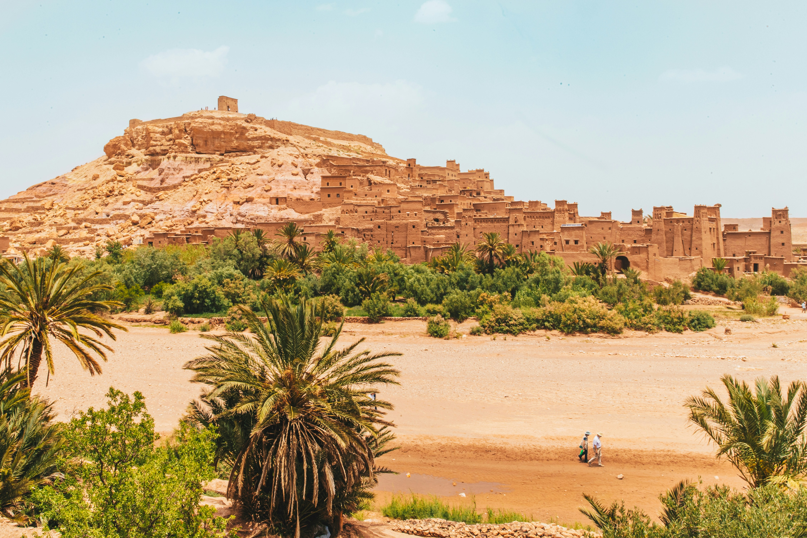

The Deserter Kingdom
Founded: 12th Century
Population: Approximately 10,000 occupants during its peak.
History: The Deserter Kingdom was established in the early 12th century by a group of renegades who sought refuge from the wars that plagued the region. Over the centuries, it grew into a thriving community known for its impressive fortifications and rich cultural heritage. The kingdom's name derives from its founders, who were deserters from various armies.
Special Attractions:
- The Grand Fortress: A massive structure that served as the kingdom's primary defense.
- The Royal Gardens: Beautifully landscaped gardens that showcase a variety of native flora.
- The Ancient Library: Home to a collection of rare manuscripts and historical documents.
- The Market Square: A bustling area where traders from across the region gathered to sell their goods.
Site Coordinator: Sir Jonathan Edwards
Sir Jonathan Edwards is the current site coordinator for The Deserter Kingdom. With over 20 years of experience in historical preservation, Sir Jonathan is dedicated to maintaining the integrity of this historic site and providing visitors with an informative and engaging experience.